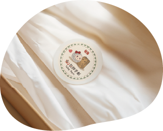
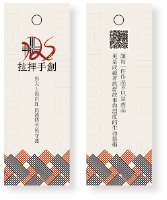

在太魯閣的山嵐之間，我們與自然共生。
文化 × 設計 Culture × Design
文化 × 美學 傳統 × 創新 永續 × 共好
太魯閣文化 × 當代設計
文化傳承．當代轉化．溫度連結
品牌故事 Brand Story
象徵文化、記憶與認同的起點。
我們以太魯閣族「彩虹橋 Gaya」為靈感，將信仰轉化為當代生活的設計語言。
讓每一件作品不只是商品，而是承載族群故事與手作溫度的生命藝術。
文化 × 設計 Culture × Design
文化 × 美學 傳統 × 創新 永續 × 共好
品牌理念 Brand Concept
彩虹橋 Gaya，
是文化記憶通往生活的橋。
Gaya 象徵太魯閣族的精神秩序、自然倫理與祖靈信仰。Rabay 將「橋」的意象轉譯為線條、經緯、織紋與品牌節奏，使傳統文化能以當代方式進入日常。
編織在此不只是工藝，而是一種連結：人與山、手與時間、族群記憶與現代生活。品牌希望讓手作物件成為可以被使用、被傳遞、被記住的文化載體。
識別系統 Logo System

太魯閣織紋 Truku Pattern
梭子意象 Shuttle Symbol
經緯結構 Warp & Weft
文化記憶 Cultural Memory
主色。代表創造力與手作熱情，是品牌最具生命力的色彩。
C0 M100 Y100 K41 / RGB 162, 0, 0主色。代表專業與清晰度，象徵山岩、石板與文化根基。
C91 M82 Y74 K62 / RGB 15, 27, 33輔助色。代表自然泉水與永續精神，連結山林與土地。
C71 M41 Y76 K1 / RGB 89, 129, 87輔助色。代表柔和與舒適感，讓品牌保有布料與苧麻的自然光。
C5 M7 Y8 K0 / RGB 245, 239, 234輔助色。代表溫潤與手作感，像木桌、編織纖維與日常器物。
C18 M25 Y36 K0 / RGB 216, 194, 164輔助色。代表工藝與大地質感，增加品牌的厚度與手作溫度。
C58 M81 Y97 K45 / RGB 88, 45, 23品牌象徵 Brand Symbol
吉祥物透過擬人化的設計，傳遞拉拝手創的文化精神與核心價值。它不是單純的角色，而是品牌溫度、手作記憶與文化故事的延伸。

品牌應用 Brand Mockup






影片企劃 Video Storyboard
品牌形象影片 Production Plan
影片主題：大地孕育的織路。透過太魯閣族的編織工藝，呈現其與土地、祖先及文化的深層連結。
視覺風格融合傳統編織圖騰與現代極簡美學，呈現高雅、寧靜且具備深厚文化底蘊的視覺基調。
以「由小見大」的敘事手法，從一片苧麻、一段編織，開展到整個文化與祖先智慧的傳承。調性保持專注、寧靜與深沉，避免過度花俏的特效。
在太魯閣的山嵐之間，我們與自然共生。
指尖牽動經緯，文化被一線一線編進生活。
文化不是遠方的傳說，而是仍在呼吸的人。